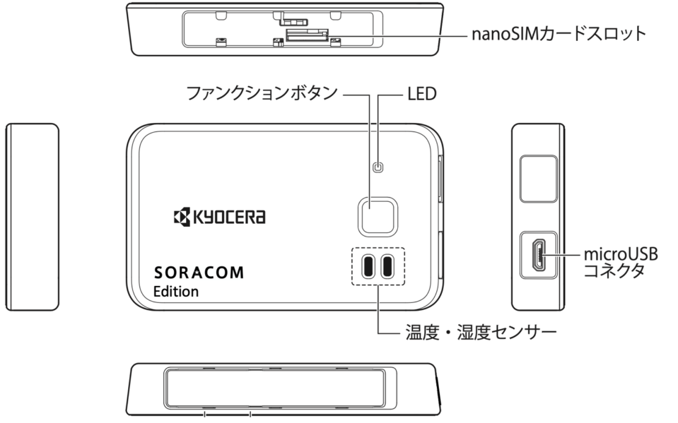
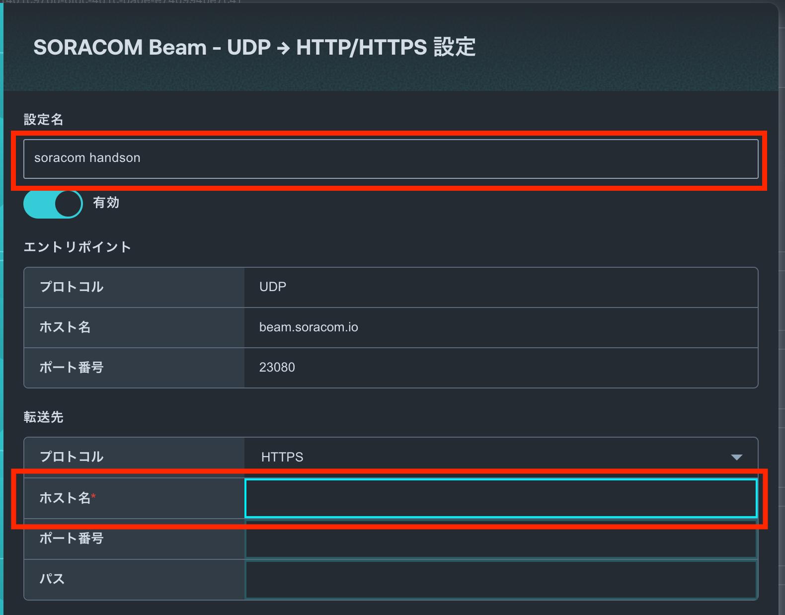
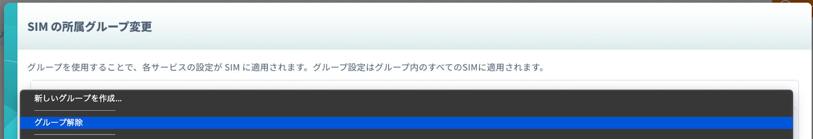

Summary | 会場でハンズオンに参加される方のうち、持ち込みのGPSマルチユニットSORACOM Editionを利用する場合の手順です。 |
URL | soracom-beam-amazon-location-service-handson-gps-mutilunit-byol |
Category | 100-Basic |
Status | Published |
Feedback Link | |
Author | Ippei Funahara、Kenichiro KIMURA、Kenichiro Wada |
Copyright | 2023 Ippei Funahara、Kenichiro KIMURA、Kenichiro Wada |
前提
このドキュメントを進めるにあたって、以下のデバイスが必要となります。
- GPSマルチユニットSORACOM Edition
このドキュメントを進めるにあたって、以下のアカウントが必要となります。
- SORACOM
- SAMユーザー
SORACOMのアカウントをお持ちでない方は https://users.soracom.io/ja-jp/guides/getting-started/create-account/ から作成してください。
本ハンズオンではSAMユーザーでの操作する前提のテキストになっています。SAMユーザーの作成がまだの方はhttps://users.soracom.io/ja-jp/docs/sam/create-sam-user/ から作成してください。
構成図
SORACOMユーザーコンソールへのログイン手順を解説します。
ユーザーコンソールへログインする
SORACOM ユーザーコンソール(SAMユーザログイン) (https://console.soracom.io/#/sam_login?coverage_type=jp) へアクセスします。SAMユーザのログイン画面が表示されますので、ご自身のオペレーターID、SAMユーザー、パスワードを入力し [ログイン] ボタンをクリックしてください。

SAMユーザーが他要素認証設定済みの場合は、MFA認証コードを入力する画面に遷移します。設定済みのMFA認証コードを入力してください。
以下のような「SIM 管理」画面が表示されたらログイン完了です。

GPSマルチユニットのセットアップをされていない場合は以下の手順を行ってください。
ガジェット設定を行い、動作確認として、GPSマルチユニットのクリックした際に SORACOM Harvest に対してデータをクリックタイプを保存する方法を解説します。
ガジェット設定にて、グループを作成する。
- ユーザーコンソール(https://console.soracom.io/) の "Menu" から "ガジェット管理" の"LTE-M Button for Enterprise/Plus" をクリックします。

- "GPSマルチユニットを追加"ボタンをクリックします。

- 今回使用するGPSマルチユニットで使うSIMが表示されているので、チェックを入れて、"次へ : グループを選択"をクリックします。
※貸し出しの場合、一覧に利用するSIMが表示されていない場合は、チューターにご連絡ください。
- 新規グループを作成 を選び、グループ名に任意の名前 (たとえば "gps-multi-uniti-group")を入力して、"次へ : 設定を編集" をクリックします。

- 送信先セクションの"SORACOM Harvest Data ( Lagoon)"にチェックを入れます。

- 定期送信 - 手動モード 詳細設定セクションの送信間隔に"2"(2分間隔)と入力します。
- 画面下部の"保存"ボタンをクリックします。

- 設定完了のダイアログが出てくれば、完了です。GPSマルチユニットのファンクションボタンを押して、設定を反映させます。その後、"デバイス一覧に戻る"をクリックして、デバイス一覧画面に戻ります。


- デバイス一覧にて、"SIMグループを編集"ボタンをクリックします。

- 作成したSIMグループの設定画面に移動しますので、SORACOM Air for セルラー設定 セクションで以下を入力します。
設定名 | 任意 |
バイナリパーサー | ON |
フォーマット | @gpsmultiunit |


- SORACOM Harvest Data 設定セクションにて、設定がONになっていることを確認します。

Harvest を確認する
Harvest 上のデータを以下の手順で確認します。
- "Menu" から "SIM 管理" を選択します。
- 使用するGPSマルチユニット の SIM の左端にある チェックボックスを選択し、"操作" => "データを確認" を選択します。
- 2分間隔でGPSマルチユニットからデータが送信されていることが確認できます。
データ列の "lat" と "lon" が緯度・経度になります。もし、この2つが "null"の場合、GPSの信号を受信することができていない状態です。窓際に置くなどして見てください。 - マップピンアイコンを選択することで表示を地図に変更して、位置情報を確認します。左上の "+" や "-" でズームを調整できます。

SORACOM Beamを使って、デバイスからのデータを運営が用意したAWS環境に送信し、位置情報を可視化するところまでを解説します。
まず、利用するサービスについて解説します。
SORACOM Beamについて
今回のハンズオンでは、「データ転送支援サービス SORACOM Beam」を用いてAWS LambdaのFunction URLsのエンドポイントにデータを送信します。
SORACOM Beamについて詳しくは以下の公式ページを参照ください。
https://soracom.jp/services/beam/
利用料金
- 日本カバレッジ 1 リクエスト(*) あたり 0.00099 円
- グローバルカバレッジ 1 リクエスト(*) あたり 0.0000099 USD
(*) エントリーポイント (Beam) へのリクエスト、Beamから転送先へのリクエスト、それぞれを個別に 1 リクエストとカウントします。
今回のハンズオンでは、ほとんどの方は無料枠の中でご利用いただけます。
SORACOM Beamの設定
AWS Lambdaを呼び出すSORACOM Beamの設定をします。
所属させたグループ名をクリックし、SIMグループの設定画面に移動します。(以下はButtonの例ですが、GPSマルチユニットでも同様です)

SORACOM Beamのセクションで[設定を追加する]をクリックして、「UDP → HTTP/HTTPS エントリポイント」を選択します。


以下の設定を入力して「保存」をクリックします。
今回のハンズオンでは、AWS側のデバイスIDとして、カスタムヘッダで設定した値を利用しますので、必ず設定を行うようにしてください。
設定名 | 任意 |
ホスト名 | 当日運営よりご案内します。 ※デバイスによって異なるので、注意 |
レスポンス - ステータスコードを省略 | ON |
カスタムヘッダ | アクション : 追加 ヘッダ名 : x-soracom-device-name 値 : 任意ですが、英数字、ハイフン(-)、アンダースコア(_)、ドット(.)のみ利用可能です。 |


動作確認
デバイスから位置情報を送信してみましょう。オンライン上の運営が表示している画面に、カスタムヘッダで入力した値と緯度軽度が表示されればOKです。
位置を変えることで、デバイスの位置が変わりますので、休憩がてらにちょっと散歩に出かけてみましょう。
（Buttonの場合、押した場所によっては、基地局が変わらず、位置が変わらない可能性もあります）
後片付けの手順を解説します。
SIMグループの削除
SIMグループを削除するには、紐づいているSIMグループを削除してから削除する必要があります。
- SIMの紐付け解除は、SIMグループの登録と同じ手順で、SIMを選択して、SIMの所属グループ変更画面を表示します。
新しい所属グループで[グループ解除]を選択して、登録すれば解除されます。

- SIMグループの削除は、SIMグループ設定画面右上の[削除]をクリックします。

- 問題なければそのまま[削除する]をクリックします。これで完了です。

なお、SIMの紐付けがあると、エラーになりますので、必ずSIMの紐付けを全部解除してから行ってください。
ボタン持ち込み/GPSマルチユニット持ち込みの場合
このままでも、課金が発生することはありませんが、後片付けを行います。
後片付けの手順にある、以下の手順のみ行ってください。
- SIMグループの削除
ボタン貸し出しの場合
ボタン貸し出しの場合、SORACOMのコンソールからログアウトして、ボタンを運営メンバーにお返しください。
GPSマルチユニット貸し出しの場合
後片付けの手順にある以下の手順を実施した上で、GPSマルチユニットからSIMカードを外して、GPSマルチユニットをお返しください。
SIMカードはお持ち帰りください。
- SIMグループの削除